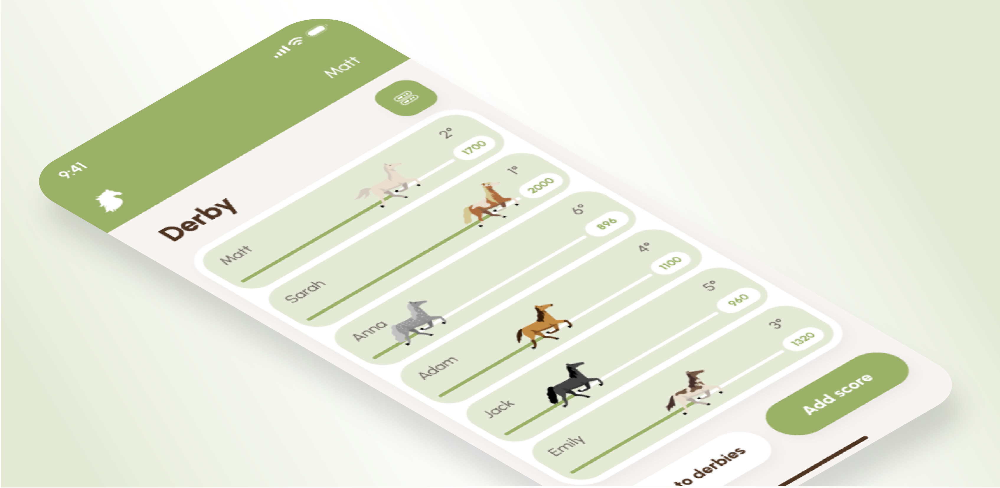

Project type
Personal
Individual
Tools
Figma
Adobe Illustrator
Duration
7 days

Project type
Personal
Individual
Tools
Figma
Adobe Illustrator
Duration
7 days
Prompt
It's common among friends to create activities to showcase their
strengths.
However, there's currently no app available to track these
achievements and monitor standings, similar to a horse
race.
Suggestion
The app operates much like a game, without a clear endpoint but
rather establishing a winner and a loser based on the current
situation.
The idea is simple: start a race, choose a
"horse," input scores, track the progress, and have some
laughs along the way.
Product structure
The current app prototype supports up to 6 players, with potential
for larger groups in future versions.
Users can
organize races, selecting participants as needed, with adding and
modifying scores as primary functions.
The interface
includes two viewing modes: horse race view and tabular
format, for detailed results.
Design solution
Feature 1: New derby
Upon first use of the app, users identify themselves once, with no need for repetition thereafter.
The first page is a derby dashboard where users can open existing ones or create a new derby using the main button.
You can select the name, participants, and choose whether to enable score descriptions.
Feature 2: Add and edit score
Therefore, the first page will display the horse view without any added scores.
During derby creation, users can add a score, specifying the recipient, the number of points, and a description if enabled.
The refreshed horse view displays the participants' progress, with a button in the top right for switching to table mode.
Feature 3: "Horse race" and tabular view
In table mode, each participant has listings containing their scores and details. This is the only place where users can delete or modify the scores.
This will open a modal for modifying the score. However, since we arrived here from a specific participant's row, it cannot be altered.
Moreover, tapping on a horse will highlight it and show a tooltip with the last recorded score that contributed to that result.
Visual design